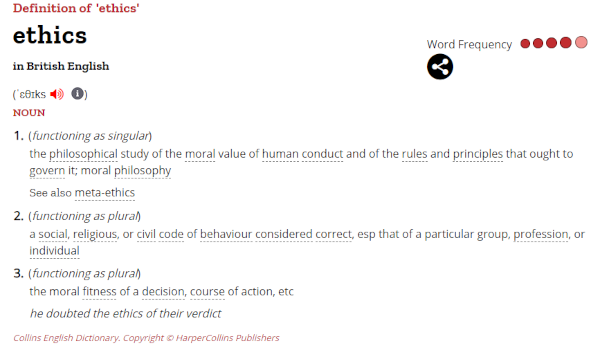

Ethical Issues
Objectives
- Define the concept of ethics in the context of philosophy.
- Identify the key components of ethics, including moral principles, values, and the concept of right and wrong conduct.
- Examine the ethical principles underpinning concerns related to technology.
- Understand the ethical implications of technological advancements in areas such as cybersecurity, mobile technologies, wireless networking, cloud storage, hacking, wearable technologies, computer-based implants, and autonomous vehicles.
- Explore the ethical issues surrounding data privacy.
- Examine the ethical issues related to public safety in the context of technology.
Broadly speaking, ethics refers to the branch of philosophy that deals with moral principles, values, and the concept of right and wrong conduct. Ethics provides a framework for evaluating and determining what is considered morally acceptable or unacceptable behaviour in various situations. Ethics guides individuals, professionals, and societies in making decisions that align with moral principles and contribute to the well-being of individuals and society.

Key components of ethics include:
- The principles of honesty, integrity, fairness, and respect for others.
- Ethics are influenced by both personal and cultural beliefs. These values can vary among individuals and societies and play a crucial role in shaping moral judgments.
It is a dynamic and evolving field that adapts to societal changes, cultural shifts, and advancements in technology. Ethical considerations are prevalent in various aspects of life, including personal relationships, business practices, medical decisions, scientific research, and more. The goal of ethical principles is to promote values that contribute to the welfare and harmony of individuals and society as a whole.
In that context we need to evaluate some of the technological changes and how they may be giving rise to these questions of what is right and what is wrong according to an ethical framework. This is different to what is legal or illegal.
- Data Privacy e.g. people try to hack systems to get hold of other people's data. Social media accounts, phone mailboxes and networks that computers connect to are all prone to hacking.
- Public safety: e.g. driverless cars may soon be on the roads in the UK. The designers of driverless cars have not only had to ensure the safety of passengers, but also of other drivers and pedestrians.
Data Privacy
Connected here are also the collection of data, the security of that collected data and an individual's consent to the gathering of that data and what it might be being used for.
Consider some of the following situations:
- Cybersecurity: A hacker gaining unauthorized access to a healthcare database containing patients' medical records could lead to privacy breaches, potential identity theft, and misuse of sensitive health information.
- Mobile Technologies: A social media app accessing users' contact lists without clear permission or knowledge, leading to the unauthorized sharing of personal contacts.
- Wireless Networking: Setting up a fake public Wi-Fi hotspot to capture data transmitted by unsuspecting users, potentially exposing sensitive information. Known as an "Evi Twin" attack.
- Cloud Storage: A cloud storage provider experiencing a data breach, resulting in the exposure of users' confidential files or sensitive business information.
- Hacking (Unauthorized Access to Computer Systems): Hacking into a government database to access classified information, risking national security and individual privacy.
- Wearable Technologies: A fitness tracker sharing users' health data with third-party advertisers without clear consent, leading to privacy concerns and potential misuse of health information.
- Autonomous Vehicles: An autonomous car's navigation system storing detailed travel history, potentially leading to unauthorized tracking or profiling of users.
Some of these issues have had some high profile news items that are worth following up:
- In 2018, Facebook faced controversy for the Cambridge Analytica scandal. The social media giant was accused of improperly sharing the personal data of millions of users with the political consulting firm Cambridge Analytica without clear user consent, highlighting issues of data privacy in mobile app usage.
- In 2017, the data breach of Equifax, one of the major US credit reporting agencies, exposed sensitive personal information of millions of individuals. This breach underscored the risks associated with the compromise of data stored in centralized repositories.
- The 2013 Edward Snowden revelations highlighted unauthorized access to classified government information. Snowden, a former NSA contractor, leaked classified documents revealing global surveillance programs, sparking debates on privacy, security, and government overreach.
- Is my home spying on me? How the rise of the Internet of Things is providing additional information about our habits and homes.
- In 2018, reports suggested that some fitness apps were sharing users' health data with third-party companies without clear consent. This raised concerns about the privacy implications of wearable technologies and the potential misuse of health-related information. More here
Public Safety
- Cybersecurity: A cyberattack on a power grid or water treatment facility could disrupt essential services, posing a threat to public safety by potentially causing widespread power outages or contaminating water supplies.
- Mobile Technologies: A malicious mobile app with access to location data could be used to track individuals, raising concerns about stalking or potential harm to users' physical safety.
- Wireless Networking: An attacker exploiting vulnerabilities in a city's public Wi-Fi network could potentially intercept sensitive communications, compromising public safety information.
- Cloud Storage: A cloud storage service containing emergency response plans for natural disasters experiencing a data breach could compromise the effectiveness of disaster response efforts.
- Hacking (Unauthorized Access to Computer Systems): Unauthorized access to a transportation system's control center could disrupt traffic management, leading to potential accidents and endangering public safety.
- Wearable Technologies: Employers using wearables to monitor employees' locations and activities without clear policies or consent may raise concerns about privacy and workplace safety.
- Computer-Based Implants: A medical implant controlling a person's insulin levels being vulnerable to hacking could lead to life-threatening consequences for the individual.
- Autonomous Vehicles: A cyberattack on the systems controlling autonomous vehicles could lead to accidents, posing risks to passengers and pedestrians on the road.
Some of these issues have had some high profile news items that are worth following up:
- The SolarWinds cyberattack in 2020 highlighted the vulnerability of software supply chains. It impacted various U.S. government agencies and private organizations, underscoring the potential risks to national security and public safety.
- In the past, various incidents have involved mobile apps with privacy and security issues. For instance, apps have been found to collect excessive data without user consent, leading to concerns about the safety and privacy of user information. Read More
- Various incidents involving accidents and safety concerns with autonomous vehicles, such as the Uber self-driving car crash in 2018, have sparked discussions about the safety of autonomous technologies and their potential impact on public safety. Also see this TED Talk on The ethical dilemma of self-driving cars.
Other issues
- Algorithmic Bias: Algorithms used in decision-making processes may perpetuate or even exacerbate existing biases, leading to unfair treatment of certain individuals or groups.
- Digital Divide: Not everyone has equal access to digital technologies, leading to a digital divide that can exacerbate existing social and economic disparities.
- Fake News and Disinformation: Digital platforms can be used to spread false information, influencing public opinion and creating challenges for democracy.
- Addiction and Mental Health: Excessive use of social media and digital devices has been linked to mental health issues, including anxiety and depression.